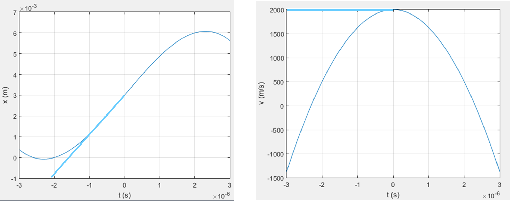
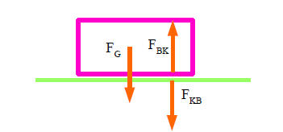
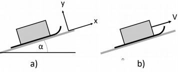
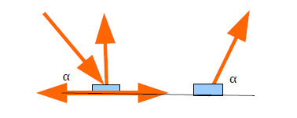

\(\star\star\)Bei Gewitter werden Elektronen in einem Blitzkanal im elektrischen Feld der Atmosphäre mit \(a=2\times 10^{17}m/s^2\) beschleunigt. Ihre mittlere freie Weglänge beträgt unter Normalbedingungen etwa \(L=5 \times 10^{-5}\) m. Nach dieser Strecke stossen sie auf ein Luftmolekül und werden gestoppt, um danach durch das Feld wieder beschleunigt zu werden. Wie lange dauert es ungefähr, bis ein Blitz die Strecke von einem Kilometer zurückgelegt hat?
Berechnen Sie die Zeit, die es braucht, um unter der gegebenen
Beschleunigung den Weg \(L\)
zurückzulegen.
Wie viele solcher Stösse sind erforderlich?
Damit können Sie dann die Zeit berechnen.
Typische Physiker Abschätzung, die Bewegung eines Blitzes lässt sich
nicht in eine Formel fassen. Trotzdem können wir vernünftige Werte
abschätzen.
Es treten hohe Beschleunigungen auf. Die Regeln der Kinematik gelten
aber auch hier, wir können mit Elektronen rechnen wie mit Bällen.
Wir haben eine konstante Beschleunigung und können daraus Ort und
Geschwindigkeit berechnen \[\begin{aligned}
a(t) &= a_0 = \text{konst.} \\
v(t) &= \int a(t) \, dt = a_0 t + v_0 \\
x(t) &= \int v(t) \, dt = \frac{1}{2} a_0 t^2 + v_0 t + x_0
\end{aligned}\]
Wir beginnen bei jedem Stoss von vorne, die Anfangsgeschwindigkeit und
der Anfangsort sind deshalb jedesmal 0: \[\begin{aligned}
a(t) &= a_0 = \text{konst.} \\
v(t) &= \int a(t) \, dt = a_0 t \\
x(t) &= \int v(t) \, dt = \frac{1}{2} a_0 t^2
\end{aligned}\]
Das Elektron legt eine mittlere Strecke L zurück bis zum nächsten Stoss,
daraus erhalten wir die Zeit zwischen zwei Stössen
\[L=\sfrac{1}{2}a_0t^2\Rightarrow
t=\sqrt{2\sfrac{L}{a_0}}=2\cdot{10}^{-11}\mathrm{s}\] Um einen
Kilometer zurückzulegen, muss es \(N=1000\:\sfrac{\mathrm{m}}{L}=2\times10^7\)
Stösse machen.
Die Zeit für einen Kilometer wird dann \(T=Nt=(2\times10^7)\times({2\times10^{-11}})=0.4\times10^{-3}\mathrm{s}\)
Das Elektron braucht etwa eine halbe Tausendstelsekunde, um einen
Kilometer zurückzulegen.
\(\star\star\)Ein geladenes Ion
bewegt sich im Vakuum kräftefrei mit der Geschwindigkeit \(v_0=2\:\text{km/s}\) längs der x-Achse. An
der Position \(x_0 = 3.0\:\text{mm}\)
tritt es zur Zeit \(t_0 = 0\) in ein
zeitabhängiges elektrisches Gegenfeld ein und bewegt sich mit der
Beschleunigung \(a=b·t\) weiter, wobei
\(b = -0.75\times10^{15} m/s^3\).
a) Skizzieren Sie das a-t Diagramm einschliesslich \(t<0\) .
b) Berechnen Sie die Funktionsgleichung \(v(t)\) für \(t>0\) mit der entsprechenden
Anfangsbedingung.
c) Berechnen Sie die Funktionsgleichung \(x(t)\) für \(t>0\) mit der entsprechenden
Anfangsbedingung.
d) Zu welcher Zeit \(t_U\) ändert sich
die Bewegungsrichtung?
e) Wo ist der Umkehrort \(x_U\)?
f) Skizzieren Sie das v-t-Diagramm einschliesslich \(t<0\)
g) Skizzieren Sie das x-t-Diagramm einschliesslich \(t<0\)
Typisches Problem der Kinematik, Beschleunigung,
Anfangsgeschwindigkeit und Anfangsort (Zeit 0) gegeben.
Beachten Sie die nicht-konstante Beschleunigung!
a)\(a-t\)
Diagramm
Für \(t<0\) ist \(a=0\). Die Geschwindigkeit des Teilchens
ist konstant. Danach lineare Abnahme mit Steigung \(-b\)
b)\(v-t\)
Die Geschwindigkeit ist das Integral der Beschleunigung über die Zeit.
\[v(t)=\int a(t)dt=\int
btdt=\sfrac{1}{2}bt^2+v_0\]
c)\(x-t\)
Der Ort ist das Integral der Geschwindigkeit über die Zeit. \[x(t)=\int
v(t)dt=\int(\sfrac{1}{2}bt^2+v_0)dt=1/2\times1/3bt^3+v_0t+x_0\]
d)Richtungsumkehr
Bei der Richtungsumkehr ist \(v=0\):
\[0=\sfrac{1}{2}bt^2+v_0\Rightarrow
t_{Umkehr}=\sqrt{\frac{-2v_0}{b}}=2.31\times{10}^{-6}s\]
e)Umkehrort
Umkehrzeit aus d) einsetzen bei c) mit \(v_0\) und \(x_0\) aus Aufgabenstellung: \(x_U = 6.08 mm\)
f, g)\(x-t\),\(v-t\) Diagramm

Die gerade hellblaue Linie zeigt die Lösung für \(t < 0\).
Die dünne gekrümmte Linie stellt die Lösungsfunktion für alle Zeiten
dar, ohne die Einschränkung konstanter Geschwindigkeit für \(t < 0\).
\(\star\)Ein Fahrzeug der Masse
\(m\) steht mit angezogener Handbremse
auf einer stark abschüssigen Strasse, die um den Winkel \(\alpha\) gegen die Waagerechte geneigt ist.
a) Berechnen Sie die resultierende Kraft, sog. "Hangabtriebskraft" (die
Vektorsumme aus Gewichts und Normalkraft)
b) Warum bewegt sich das Fahrzeug unter dem Einfluss der
Hangabtriebskraft nicht abwärts?
c) Berechnen Sie unter Verwendung der Newtonschen Bewegungsgleichung,
wie gross die Reibungskraft sein muss. Was wäre der maximale Winkel, an
dem das Fahrzeug noch stehen bleibt?
a) Schauen Sie auf der Folie Kräfte am Hang nach.
b) Es muss eine entgegengesetzte kompensierende Kraft geben. Welche?
a) Die Summe von Gewichts- und Normalkraft zeigt parallel zum Boden
(das Auto sinkt nicht ein), ihr Betrag ist \(F
= m g \sin \alpha\)
b) Die maximale Haftreibungskraft ist grösser als die Gravitationskraft
und die wirkende Haftreibungskraft kompensiert deshalb die Kraft
parallel zum Hang.
c) Keine Beschleunigung, d.h. reultierende Kraft 0, die wirkende
Reibungskraft ist somit gleich \(F = m g \sin
\alpha\) hanaufwärts.
Maximale Haftreibungskraft > Kraft parallel zum Hang: \(m
g \cos\alpha\:\mu_{Haft}>m\:g\:\sin\alpha\)
Aufgelöst nach dem Haftreibungskoeffizienten: \(\mu_{Haft}>\frac{\sin\alpha}{\cos\alpha}=\tan\alpha\)
Der Haftreibungskoeffizient muss grösser sein als der Tangens des
Neigungswinkels. Die Steigung von Strassen ist oft in Prozent angegeben,
das entspricht gerade dem Tangens. Bei einer sehr steilen Strasse mit 10
% Neigung muss also \(\mu_\text{Haft} >
0.1\) sein.
\(\star\)Eine mittlere Antriebskraft
von 800 N wirkt während einiger Zeit auf ein Fahrzeug, dessen Masse 1100
kg beträgt.
a) Berechnen Sie die Strecke, die das Fahrzeug auf horizontaler Strasse
in 5 s zurücklegt.
b) Welche Geschwindigkeit hat es dann?
Einfacher Fall einer gleichmässig beschleunigten Bewegung.
Hemdsärmlige Lösung \[\begin{aligned}
&\text{a)} \quad a = \frac{F}{m} = \frac{800}{1100} = 0.73 \,
\frac{\text{m}}{\text{s}^2}\quad \, s = \frac{1}{2} a t^2 = \frac{1}{2}
\frac{F}{m} t^2 = 9.09 \, \text{m} \\
&\text{b)} \quad v = at = \frac{F}{m} t = \frac{800}{1100} \cdot
5 = 3.63 \, \text{m/s}
\end{aligned}\]
Systematische Lösung nach Schema
(1) Betrachten das Auto
(2) Koordinatensystem entlang der Strasse in Fahrtrichtung
(3) Kräfte sind Antriebskraft, Gewichts und Normalkraft
(4) Die Resultierende Kraft ist die Summe aller Kräfte. Gewichts und
Normalkraft heben sich auf, vertikal wirkt keine Kraft, das Fahrzeug
bewegt sich nicht vertikal. Es bleibt die Antriebskraft.
Die Antriebskraft wirkt vom Auto auf die Strasse, die Gegenkraft der
Strasse auf das Auto treibt das Auto an.
(5) Die Kraft ist konstant. Daraus erhalten wir \(a, v, x\)
\[\begin{aligned}
\vec{a} &= \frac{\vec{F}}{m} = \text{const.} \\
\vec{v} &= \int \vec{a} \, dt = \frac{\vec{F}}{m} t + \vec{v}_0
\\
\vec{x} &= \int \vec{v} \, dt = \frac{1}{2} \frac{\vec{F}}{m}
t^2 + \vec{v}_0 t + \vec{x}_0
\end{aligned}\] (6) Anfangsbedingungen: Das Auto startet aus der
Ruhe am Ort 0: \[\begin{aligned}
\vec{a} &= \frac{\vec{F}}{m} = \text{const.} \\
\vec{v} &= \int \vec{a} \, dt = \frac{\vec{F}}{m} t\\
\vec{x} &= \int \vec{v} \, dt = \frac{1}{2} \frac{\vec{F}}{m}
t^2
\end{aligned}\] Lösung (a): In Gleichung für \(x\) einsetzen
Lösung (b): In Gleichung für \(v\)
einsetzen
\(\star\star\)Ein Klotz liegt auf
dem Boden. Wählen Sie für Klotz und Boden verschiedene Farben.
a) Zeichnen Sie die Gewichtskraft \(F_G\) ein, mit der die Erde den Klotz
anzieht.
b) Wechselwirkungskräfte: Zeichnen Sie nun die Kraft \(F_{KB}\) des Klotzes auf den Boden und die
Gegenkraft \(F_{BK}\) des Bodens auf
den Klotz ein. Dabei bedeutet K Klotz und B Boden. Diese Kräfte sind
Kraft und Gegenkraft. Sie greifen an verschiedenen Körpern an und
genügen dem Wechselwirkungsgesetz.
c) Welche Kräfte greifen am Klotz an? Woran erkennt man, dass diese
Kräfte sich genau aufheben?
d) Wo greift die Gegenkraft zur Gewichtskraft des Klotzes an?
Denken Sie an die Eigenschaften von actio-reactio Paaren.

a+b) siehe Skizze
c) Gewichtskraft nach unten, die Kraft des Bodens \(F_{BK}\) nach oben. Der Klotz bewegt sich
nicht, es gibt deshalb keine resultierende Kraft, die Vektorsumme \(\vec{F_G}+\vec{F_{BK}}=0\)
d) Die Gravitationskraft Klotz auf Erde als Gegenkraft zur Gewichtskraft
(Gravitation Erde auf Klotz) kann man sich im Zentrum der Erdkugel
befestigt denken. Jedes Atom der Erde zieht natürlich am Klotz, aus
Symmetriegründen ist das äquivalent zu einem Massepunkt im Zentrum der
Erde.
\(\star\star\)Ein Fahrzeug wird im
Gebirge aus einer engen Kurve geschleudert und stürzt \(h=48\) m in die Tiefe.
Die Aufschlagstelle liegt von der Absturzstelle horizontal gemessen
\(L=52\) m entfernt.
Ist die Ursache des Unfalls ein Überschreiten der Höchstgeschwindigkeit
von 40 km/h gewesen?
Skizze mit Bezeichnungen und Koordinatensystem, Rechnung.
Stichwort Horizontaler Wurf
Zwei Lösungswege
Beide Lösungswege liefern dasselbe Ergebnis. Der zweite ist formaler und
schult das Denken besser.
Lösung Ralph Markendorf
Fallzeit für 48 m : \(t=3.13\) s (siehe
unten) Daraus Wurfweite \(3.13 \times 40/3.6 =
34.8\) m. Mit 40 km/h wäre das Fahrzeug nur ca. 35 m weit
geflogen.
Allgemeinerer Ansatz mit dem Schema
Wir kennen die folgenden Anfangsbedingungen
Setzen Sie den Anfangspunkt auf der Straße: \[\vec{r}_0 = (0, 0) \quad \text{und} \quad
\vec{v}_0 = (v_{0x}, 0)\] Der Aufschlagpunkt zur Zeit \(t_1\) ist: \[\vec{r}(t_1) = (+52, -48 \, \text{m})\]
Die Beschleunigung ist: \[\vec{a} = (0,
-g)\] 1-Was betrachten wir?
Das Auto
2-Koordinatensystem
Wählen ein Koordinatensystem mit y gegen oben, x in
Fahr/Flugrichtung
Ursprung am Boden, wo das Auto aufprallt
3-Kräfte
Es wirkt nur die Gewichtskraft
4-Resultierende Kraft \[\vec{F}_{\text{Res}} = \vec{F}_G = m
\vec{g}\]
5-Bewegungsgleichung \[\vec{a} = \frac{\vec{F}_{\text{Res}}}{m} =
\vec{g}\] 6-Lösung \[\begin{aligned}
v &= \int a \, dt = gt + v_0 \\
\vec{r} &= \int v \, dt = \frac{1}{2}gt^2 + v_0 t + \vec{r}_0
\end{aligned}\] 7-Anfangsbedingungen \[\vec{g} = (0, -9.81) \, \text{m/s}^2, \quad
\vec{v}_0 = |\vec{v}_0|(1, 0), \quad \vec{r}_0 = (0, h)\]
Einsetzen in Lösung:
Flugzeit, Aufschlag zur Zeit \(t_1\):
In y-Richtung:\(r_y(t_1) =
\frac{1}{2}(-9.81)t_1^2 + 0 + h \stackrel{!}{=} 0\) Daraus \(t_1\).
In x-Richtung:\(r_x(t_1) = |\vec{v}_0|
t_1\), \(t_1\) von oben, daraus
\(v_0\).
\(t_1 = 3.13 \, \text{Sekunden}, \quad v_0 =
16.6 \, \text{m/s} = 59.8 \, \text{km/h}\)
Ja, die Geschwindigkeit wurde deutlich überschritten.
\(\star\star\)Betrachten Sie den
Schlitten auf der schiefen Ebenen in der Skizze unten. Dieser steht
still (a) oder wird mit konstanter Geschwindigkeit \(v\) nach oben gezogen (b).
Zeichnen Sie für beide Situationen alle auf den Schlitten wirkenden
Kräfte in den Bildern ein und bezeichnen Sie die Kräfte sinnvoll.
Geben Sie für die Situation a) den Vektor der Reibungskraft an, in b)
die Seilkraft.

Thema Kräfte am Hang, Schiefe Ebene mit trockener Reibung
In beiden Fällen wirkt die Gewichtskraft nach unten und die
Normalkraft von der Unterlage senkrecht nach oben.
In beiden Fällen ändert sich die Geschwindigkeit nicht: Bei a) ist sie
konstant null, bei b) konstant \(v\).
In x-Richtung gibt es deshalb keine resultierende Kraft.
Bei a) wirkt hangabwärts in negativer x-Richtung eine Kraft \(F_x=-mg \sin\alpha\). Um die resultierende
Kraft in x-Richtung zum Verschwinden zu bringen, braucht es hangaufwärts
eine Haftreibungskraft \(F_{Haft,x}=+mg
\sin\alpha\). Ihre y-Komponente ist null.
Bei b) wirkt hangabwärts in negativer x-Richtung zusätzlich eine
Gleitreibungskraft: \(F_x=-(mg
\sin\alpha+F_N\mu)=-mg (\sin\alpha+\cos\alpha\mu)\). Weil die
Geschwindigkeit konstant ist, muss die Zugkraft im Seil gerade das
Negative dieser Kraft sein: \(F_{Zug}=+mg(\sin\alpha+\cos\alpha\mu)\)
\(\star\star\)Für ein Auto der Masse
\(m\) mit Allradantrieb beträgt \(\mu_H\) = 0.7.
a) Wie gross ist die maximale Beschleunigung \(a_max\) beim Anfahren auf ebener
Strasse?
b) Wir nehmen jetzt an, auf dem Mond gäbe es eine Strasse, ähnlich wie
auf der Erde. Ist die höchstmögliche Beschleunigung auf dem Mond die
gleiche wie auf der Erde?
c) Das Auto sei jetzt anstelle des Allradantriebes mit Frontantrieb
ausgestattet. Bei der Behandlung der Reibung haben wir gesehen, dass die
Haftreibungskraft unabhängig von der Grösse der Berührungsfläche ist.
Bedeutet das, dass sich durch Umstellung auf Frontantrieb die maximal
mögliche Beschleunigung nicht ändert?
a) Welche Kraft beschleunigt das Auto? Sie muss von der Strasse auf
das Auto wirken,
b) Welcher Parameter in der Reibungskraft ist spezifisch für die
Erde?
c) Denken Sie an der Normalkraft.
(a)Die Beschleunigung ist: \(F = a
m\)
Die maximale Kraft des Bodens auf die Reifen ist die maximale
Haftreibungskraft \[mg_E\:\mu_{Haft}=a_{max}\:m\Rightarrow
a_{Max}=g_E\:\mu_{Haft}\] (b) Auf dem Mond ist die
Gravitationsfeldstärke \(g_M\) kleiner
als die Gravitationsfeldstärke \(g_E\)
auf der Erde.
Damit sind auch die Normalkraft und die Reibung kleiner. (Grenzfall:
Ohne Gravitation gibt es gar keine Normalkraft und Haftreibung, aber die
zu beschleunigende Masse bleibt die gleiche.)
Die maximale Beschleunigung \[a_{Max}=g_M\:\mu_{Haft}\] ist deshalb um
den Faktor \[\sfrac{g_E}{g_M}\approx6\] kleiner.
(c) Mit Vorderrad-Antrieb trägt nur die Normalkraft der vorderen Räder
zur Reibungskraft bei. Das ist rund die Hälfte. Allradantrieb bringt
mehr Reibungskraft vom Boden auf die Räder.
\(\star\star\star\)Ein Staubsauger
mit dem Gewicht \(F_G\) wird einmal
geschoben und einmal gezogen. Der Koeffizient für das Gleiten auf dem
Boden betrage \(\mu_\text{Gl}\).
(a) Mit welcher Schubkraft \(F_S\) muss
mindestens unter dem Winkel \(\alpha\)
gegen den Staubsauger gedrückt werden, damit das Gleiten
aufrechterhalten bleibt?
(b) Mit welcher Zugkraft \(F_Z\) muss
der Staubsauger unter dem Winkel \(\alpha\) mindestens gezogen werden, damit
das Gleiten aufrechterhalten bleibt? Vergleichen Sie mit (a). Warum ist
das Ziehen leichter als das Schieben?
Zerlegen Sie die Schub- bzw- Zugkraft in ihre Komponenten parallel
und senkrecht zur Oberfläche. Eine Skizze ist hilfreich.
Berechnen Sie damit die Gleitreibungskraft. Achtung! Normalkraft ist
nicht nur \(m g\)
Stellen Sie dann eine Bedingung für die Gleitreibungskraft und die
Horizontalkomponente der Zug/Schubkraft auf, damit der Staubsauger mit
konstanter Geschwindigkeit gleitet.

Stossen
Die Kraft \(F\) stösst unter dem Winkel
\(\alpha\) von links oben. Die
Normalkraft des Bodens auf den Schlitten setzt sich zusammen aus der
Gewichtskraft des Schlittens und der vertikalen Komponente der Kraft
\(F:F_N=F_G+F \sin\alpha.\)
Die Reibungskraft ist dann \(F_R=F_N\mu=(F_G+F
\sin\alpha)\mu.\)
Die Komponente vorwärts (parallel zum Boden) der Kraft \(F\) muss gerade gleich dieser Reibungskraft
sein, damit der Staubsauger mit konstanter Geschwindigkeit fährt: \(F \cos\alpha\geq F_R=F_N\mu=(F_G+F
\sin\alpha)\mu.\)
Diesen Ausdruck können wir nach \(F\)
auflösen: \(F\geq\frac{F_G\mu}{\cos\alpha-\mu
\sin\alpha}\)
Mit steigendem Winkel wird die Kraft immer grösser und unendlich, wenn
der Nenner null wird.
Ziehen
Beim Ziehen gibt es eine Komponente von \(F\) nach oben, die Normalkraft wird
kleiner.
Die Bedingung wird \(F \cos\alpha\geq
F_R=F_N\mu=(F_G-F \sin\alpha)\mu.\)
Aufgelöst nach \(F\geq\frac{F_G\mu}{\cos\alpha+\mu
\sin\alpha}.\)
Der Nenner ist beim Ziehen immer grösser als beim Stossen und es braucht
deshalb weniger Kraft zum Ziehen als zum Stossen.
\(\star\star\star\star\)Hagelkörner
werden durch Aufwinde immer wieder in höhere und kältere Luftschichten
getragen, wobei sich kleinere Wassertröpfchen anlagern und
gefrieren.
Schätzen Sie die Windgeschwindigkeiten ab, die bei der Entstehung von
Hagelkörnern von der Grösse eines Hühnereies (r = 2 cm) geherrscht
haben
Keine Aufgabe für eine Prüfung. Versuchen Sie die Gedanken direkt mit der Lösung nachzuvollziehen.
Wir betrachten das Hagelkorn und wählen eine Koordinatenachse, die
nach oben zeigt. Die resultierende Kraft auf das Hagelkorn ist \(\vec{F}_{\text{Res}} = \vec{F}_G +
\vec{F}_{\text{Wind}}\).
Im Grenzfall ist die resultierende Kraft gerade \(0\) \(\Rightarrow
\vec{F}_G = -\vec{F}_{\text{Wind}}\).
Die Gewichtskraft ist \(\vec{F}_G = -mg =
-\frac{4 \pi}{3} r^3 \rho_{\text{Eis}} g\) (negativ, weil gegen
Koordinatenachse).
Die Windreibung ist sicher turbulent. Dann ist die Windkraft auf das
Hagelkorn \(|\vec{F}_{\text{Wind}}| =
\frac{1}{2} \rho_A c_w v^2\) (positiv, weil entlang
Koordinatenachse).
Im Gleichgewicht: \[\frac{1}{2} \rho (r^2
\pi) c_w v^2 = \frac{4 \pi}{3} r^3 \rho_{\text{Eis}} g\] Daraus
die Geschwindigkeit \[v = \sqrt{\frac{8/3 \,
r \, \rho_{\text{Eis}} g}{\rho_{\text{Luft}} c_w}}\] Eingesetzt
mit Verhältnis Eis/Luft (bei \(0^\circ
\text{C}\)) = \(918 / 1.30 \sim
706\) und \(c_w = 0.15\): \(v = 50 \, \text{m/s} \sim 180 \,
\text{km/h}\). Der numerische Wert der Lösung hängt von der Wahl
der Luftdichte und von \(c_w\) ab.